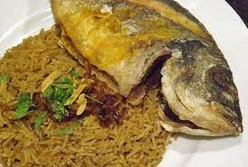

Sayadiyah
Fish and rice is the perfect combination for a complete, nutritious and rich dish.
Let's learn how to make healthy and delicious Sayadiyah fish with rice
Sayadiya amounts
1 kilo or half a kilo of fresh, cleaned fish.
2 chopped onion heads .
3-4 tablespoons of lemon juice.
Mixed spices, salt, cumin and pepper to taste.
1 - 2 cups of healthy brown rice.
4-6 tablespoons of olive oil.
2-3 chopped cloves of garlic (optional).
How to prepare
1. Prepare the fish
To prepare fish in a healthy way, follow these steps:
Make sure the skin of the fish is thoroughly cleaned of any remaining scales and scales.
Marinate the fish in a little lemon and salt.
Wash the fish from salt and lemon, then season it with various spices.
Spread the fish pieces on the oven tray with a little olive oil .
Put the fish in the oven and let it cook until it's completely cooked through.
How to prepare the rice
Soak the rice in warm water for at least 30 minutes, and try to change the water more than once to reduce any harmful substances that the rice may contain.
Heat the olive oil in a deep pot, then add the chopped onion and stir well for a few minutes.
Add the rice after it has been filtered from the water to the onions and oil with salt and spices.
Stir the ingredients together over the stove, then immerse the rice in warm water so that the water is about one centimeter above the surface of the rice in the pot.
You can distribute grilled fish pieces inside the rice to cook with it if you like and for a more delicious flavor.
Reduce the heat after the ingredients start to boil, cover the pot and leave it on the stove for 30-45 minutes.
Remove the pot from the heat when the Sayadiyah rice is completely cooked.
Serve fish sayadiyah with rice with a side dish of curd , or with a side dish of healthy Arabic salad.
Additional tips for making Sayadieh fish with rice.
